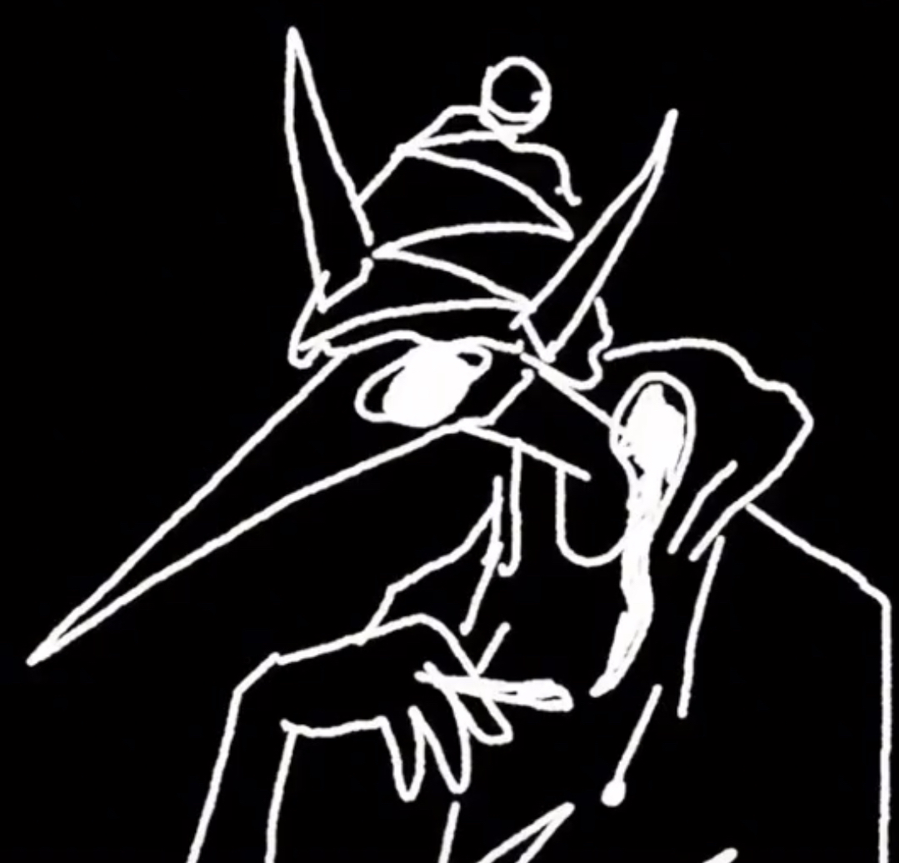

Hey. I'm WalrusAmbrosia, Welcome To My Coccon
you may know me as a delusional developer, some may know me as the dude who mods "special" games, this is sadly my primary source of income.
i am a musician and quite the enthusiast when it comes to audio quality and music in general
Most of my free time right now goes into commissions & lytanic, a music player for Plex. There's a page for it if you want to read about it.
Look around.
